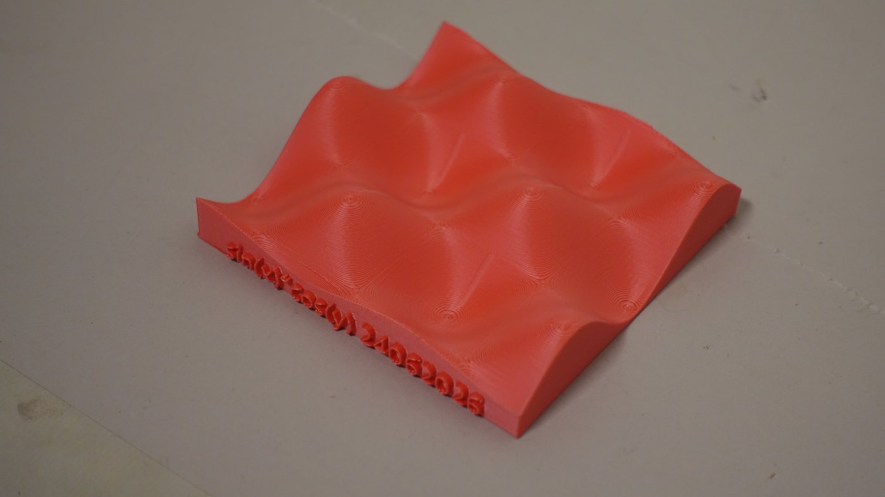
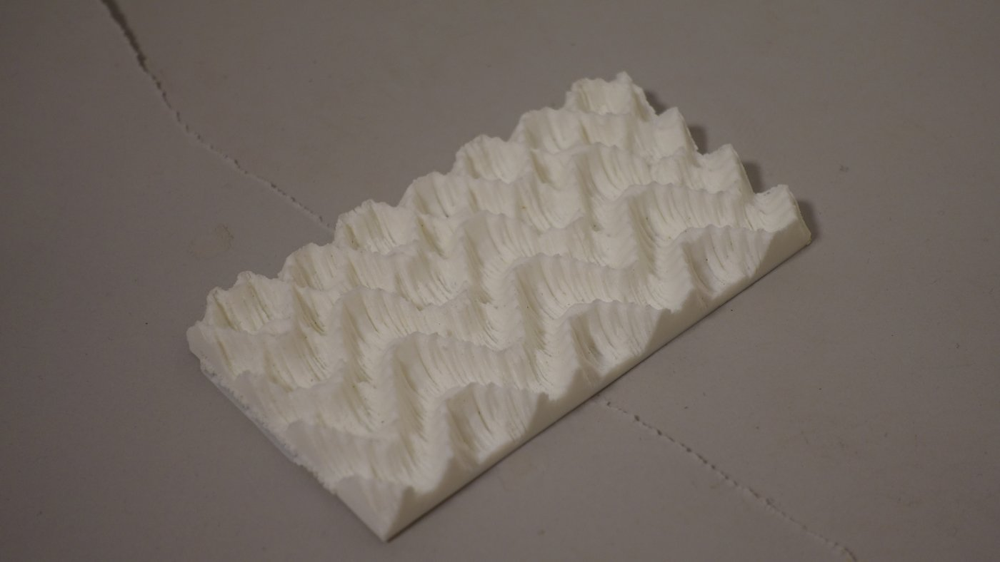
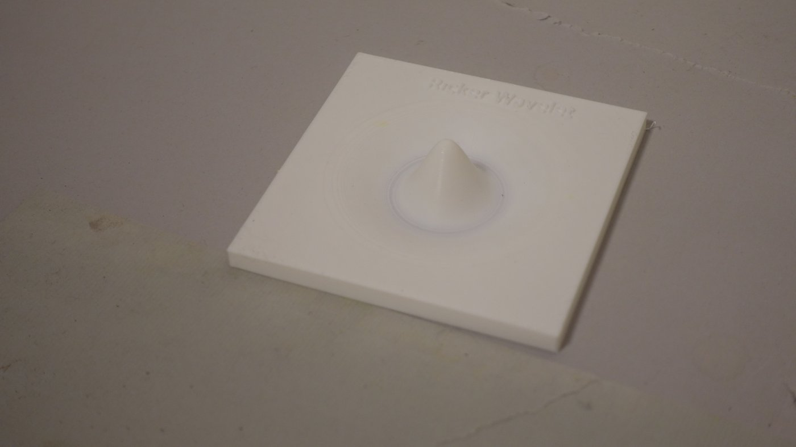
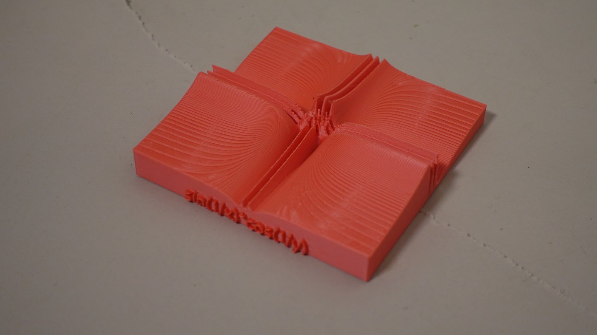
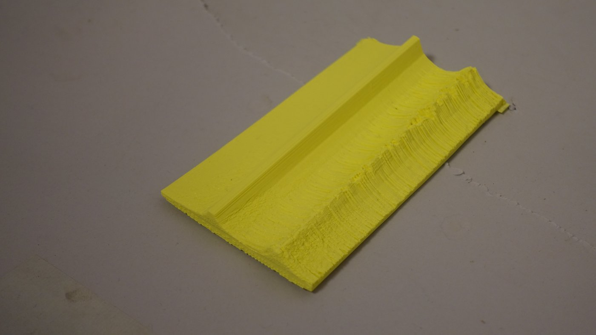
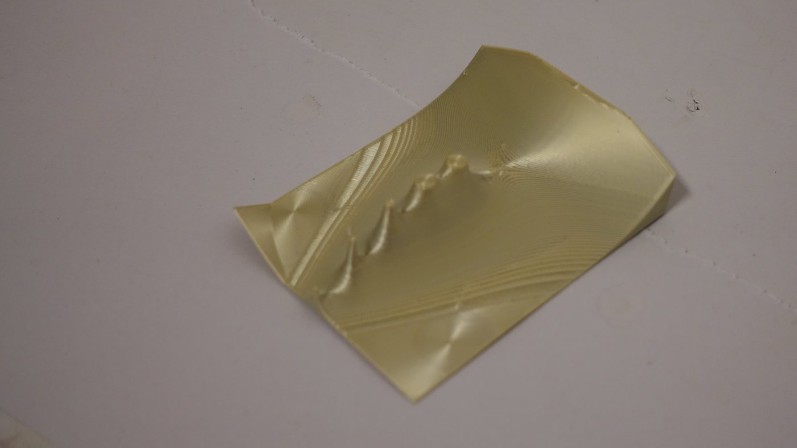

What it does
Scientific results are overwhelmingly visual — charts and graphs that exclude people with visual impairments and offer nothing tactile. DataSoniPrint converts 2D and 3D data into accessible outputs so that no single sense is required to experience it.
Tactile 3D print
Export a watertight STL relief you can 3D-print and feel — with optional engraved or braille axis labels.
From data, formulas or images
Generate reliefs from data columns, math formulas, or images.
Live 3D preview
See the relief in 3D and scale it to your printer bed before exporting.
Inclusive teaching & learning
Touch is a way of knowing. A 2-D plot can only hint at a third dimension; a printed relief lets you grasp it directly — with your hands and your eyes, instead of relying on imagination alone. DataSoniPrint invites anyone to turn an abstract formula, dataset, or chart into something tactile and touchable: a learning and epistemic tool for understanding through form.
It is built for inclusive teaching. It opens data and mathematics to students with visual impairments — and it helps everyone else too. A teacher at any level and in any subject, explaining a graph, a map, or a function, can turn it into a tactile object that makes the idea click. A blind or low-vision learner can hold and feel the print; a sighted learner can read the same chart — everyone works from the same underlying data.
How to use it
- Open the app with the Launch the app button above.
- Upload data (CSV/HDF5/NetCDF/GRIB/ASDF), an image, or enter a formula.
- Adjust the relief, height, and label options; preview in 3D.
- Download the STL and print it.
Examples
Previews and printed results — use the arrows to see more.

sin-x-cos-y.jpg

gravitational-waves.jpg

ricker-wavelet.jpg

sin-1-x-cos-1-y.jpg

atlas-higgs-challenge.jpg

gamma.jpg
About the project
The micro-innovation project “Tactile Data” develops a compact, practice-oriented teaching format that gives students — especially those with visual impairments — an alternative, haptic way to access data-based content. At its core is a minimalist software tool that automatically translates common data graphics into printable 3D reliefs (STL files). These are produced as tactile mini-reliefs via 3D printing and used directly in teaching.
The project is carried out jointly by Prof. Björn Penning and Kaspar König, and is explicitly designed for rapid implementation and high didactic impact.
Team
Prof. Dr. Björn Penning
Project lead — Professor at the Physik-Institut (Physics Institute), University of Zurich, where he heads the Dark Matter Group.
Dipl.-Des. M.Mus. Kaspar König
Concept & design — accessible, tactile data formats for teaching.
Open source, licence & funding
DataSoniPrint is fully open source — the complete code is public for review, reuse, and contribution: github.com/Kultkat/DataSoniPrint.
It is released under a Creative Commons Attribution 4.0 licence (CC BY 4.0): you are free to use, share, and adapt it — including in teaching — as long as you credit “DataSoniPrint — B. Penning & K. König, University of Zurich”.
The project was made possible by micro-funding from ULF (Universitäre Lehrförderung — the University of Zurich teaching-innovation fund): ulf.uzh.ch.